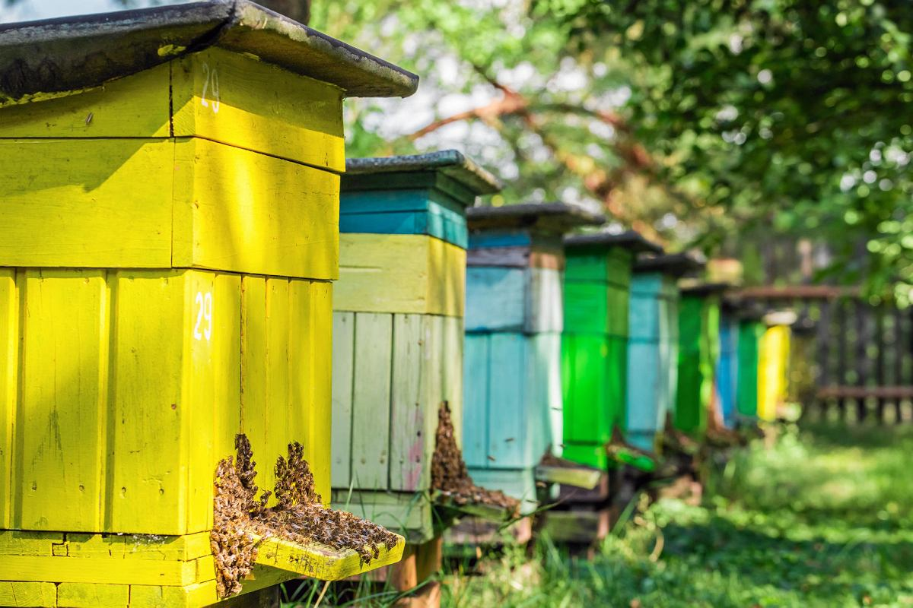

Dokładnie rok temu w naszym rodzinnym ogrodzie stanęły pierwsze kolorowe ule. Decyzja o założeniu pasieki była spontanicznym pomysłem, który szybko przerodził się we wspólną, pełną zaangażowania pasję. Początki wymagały od nas sporej dawki nauki od poznania hierarchii w ulu, przez zrozumienie roli matki pszczelej, aż po opanowanie bezpiecznego podchodzenia do tych niezwykłych owadów. Każdy weekend przynosił nowe obserwacje i uczył nas cierpliwości oraz szacunku do rytmu natury.
Codzienna i sezonowa opieka nad pszczołami to spore wyzwanie logistyczne. Wiosną regularnie kontrolujemy stan czerwiu i dbamy o odpowiednią ilość miejsca w ulach, dokładając kolejne ramki i korpusy, aby zapobiec nastrojowi rojowemu. Z kolei latem stale monitorujemy dostęp owadów do świeżej wody na pobliskich poidełkach oraz sprawdzamy zdrowotność rodzin pod kątem pasożytów. Nasze ule mienią się żółcią i błękitem, dzięki czemu pszczoły bez trudu trafiają z powrotem po całym dniu zbierania nektaru z okolicznych łąk i lip.
Najbardziej wyczekiwanym momentem sezonu jest oczywiście miodobranie. Proces odsklepiania plastrów i wirowania miodu stał się u nas prawdziwym świętem, w które angażuje się cała rodzina. Świeży miód lipowy i wielokwiatowy prosto z własnej pasieki ma nieporównywalny smak i aromat, a widok pracowitych pszczół na wylotkach upewnia nas, że ten rok był zaledwie początkiem pięknej przygody pszczelarskiej.
